A little more life.
Enter the interactive world →A happy tail, a fine brush, a breeze across the pond, and warm campus windows. Pictures open at their full size; recordings show the actual interactions.
A walk together
A happy little follower
An unexpected visitor
A little hello
Windows after dark


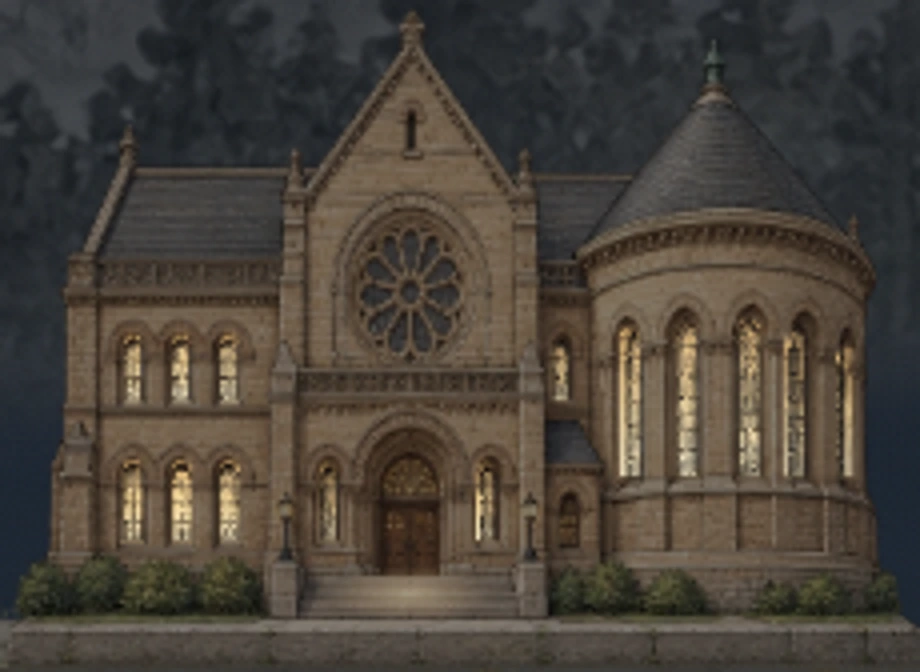

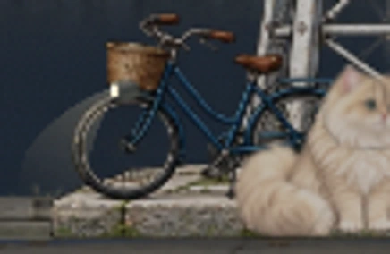
A breeze across the pond
A letter at a time

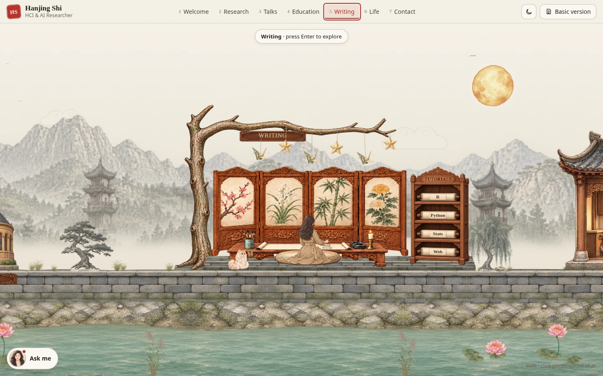

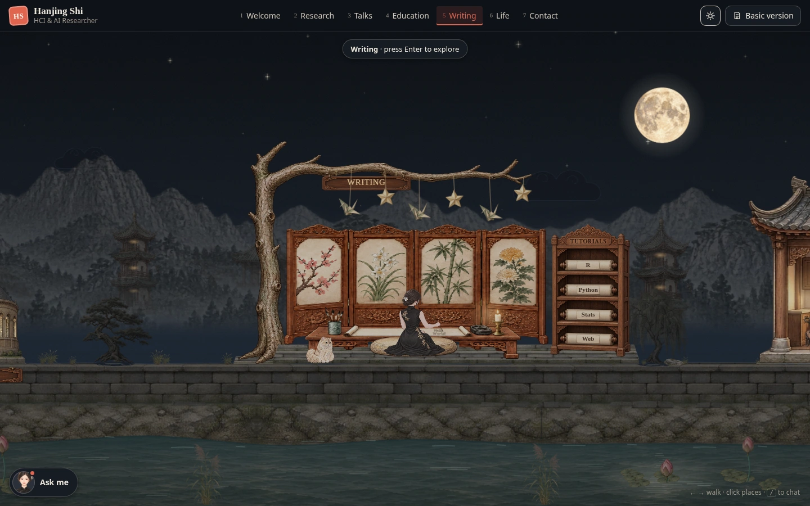
Writing on a phone

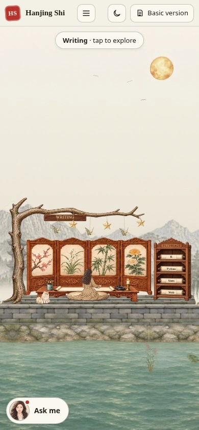

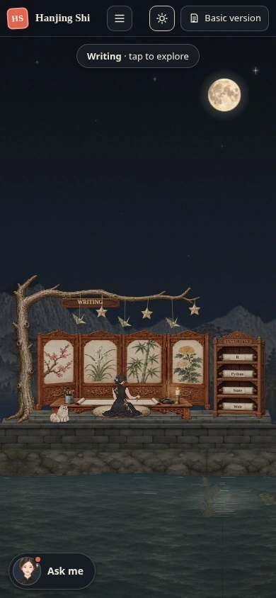
Around the world
Each stop, in daylight and after dark. Open a picture to see the whole scene.
Welcome

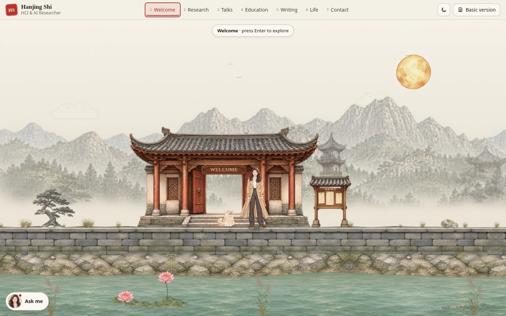

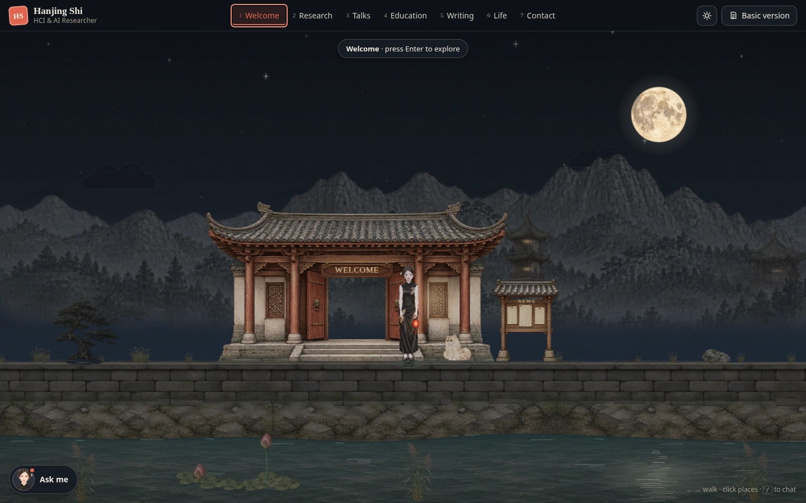
Research

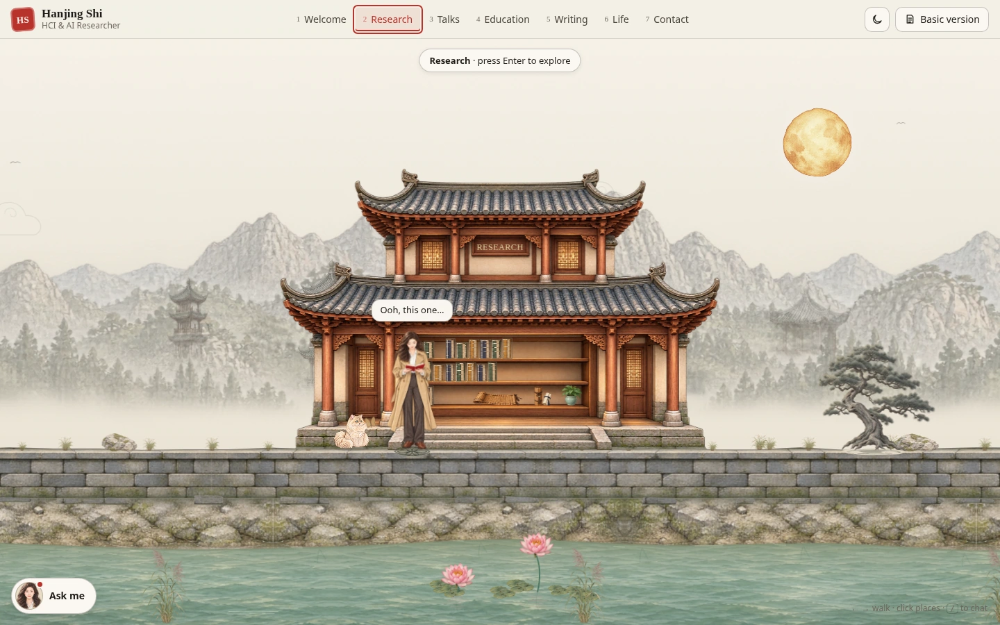

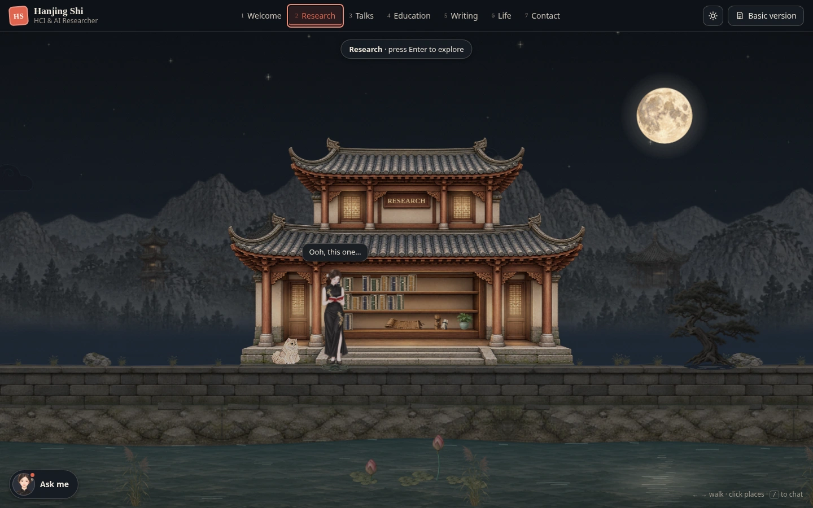
Talks

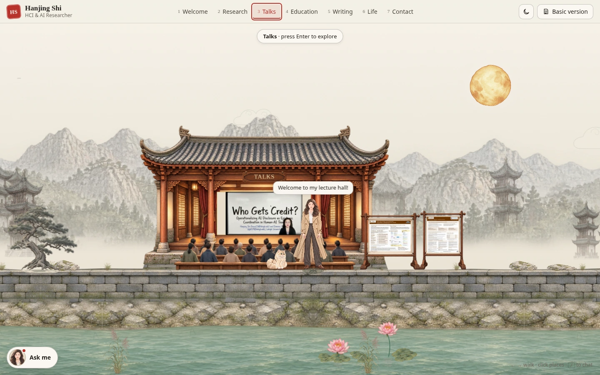

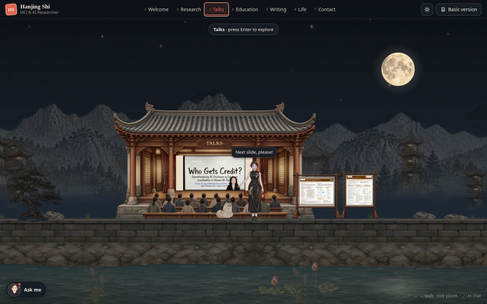
Education

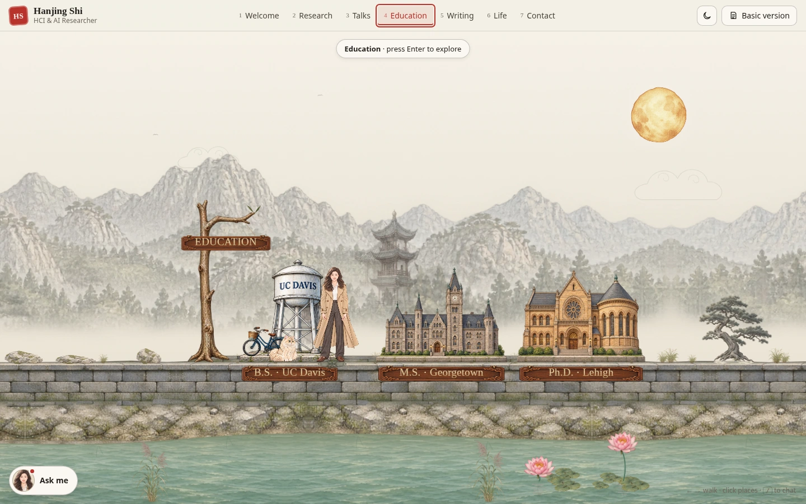

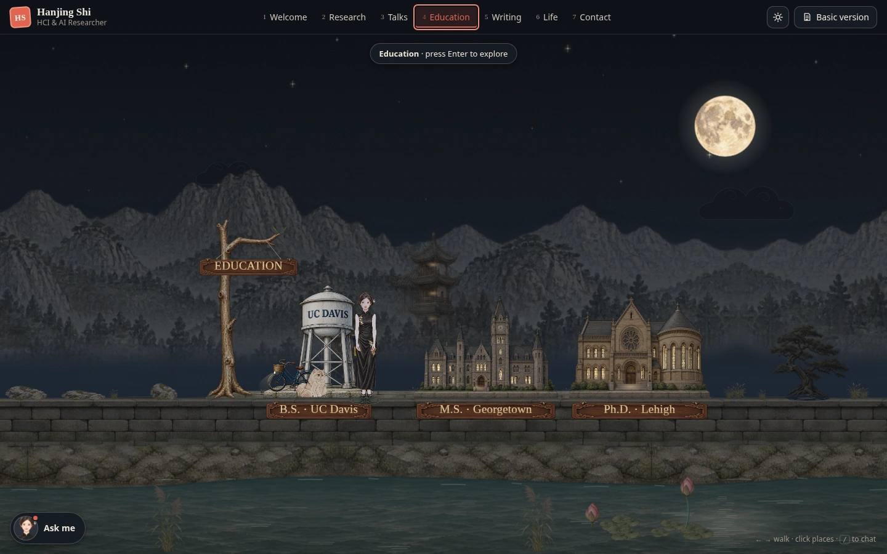
Writing
Life

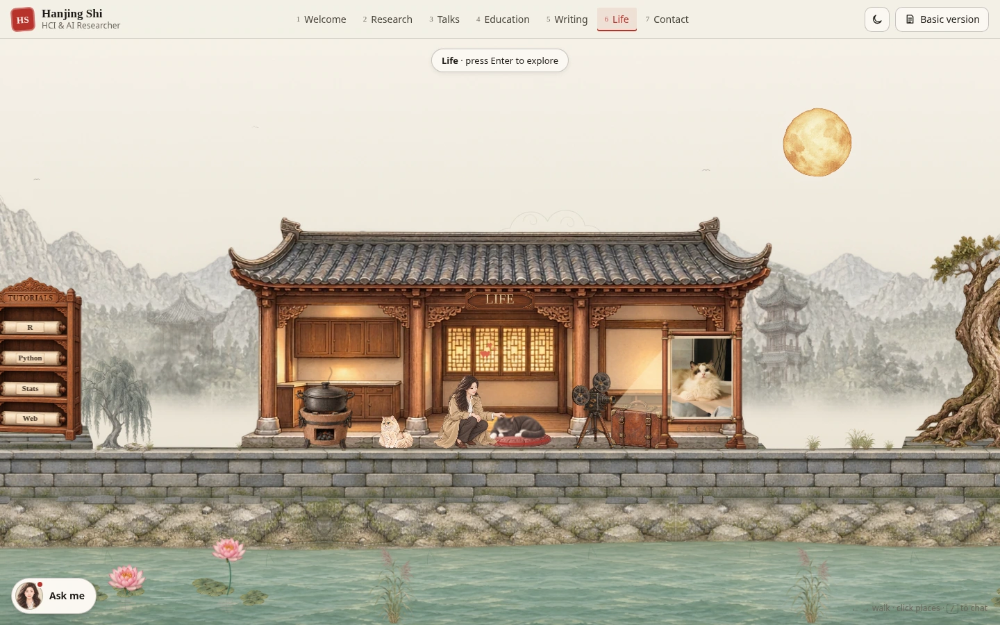

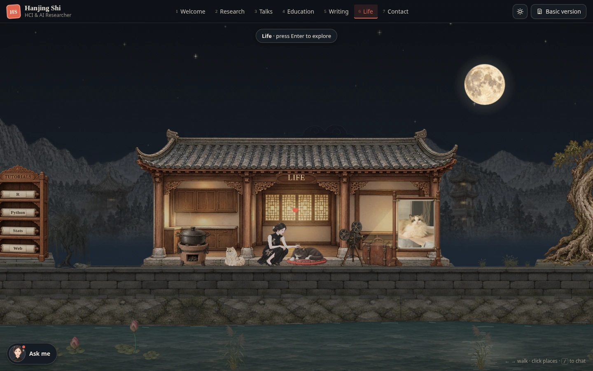
Contact

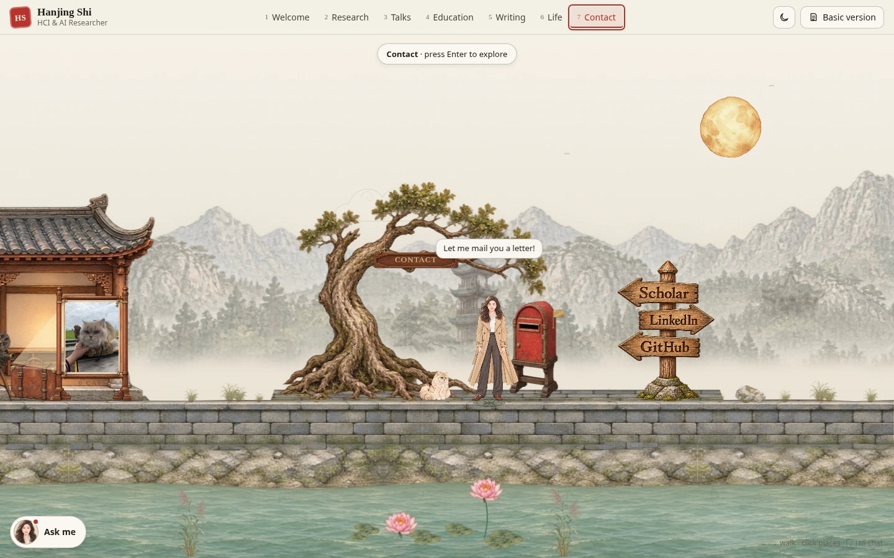

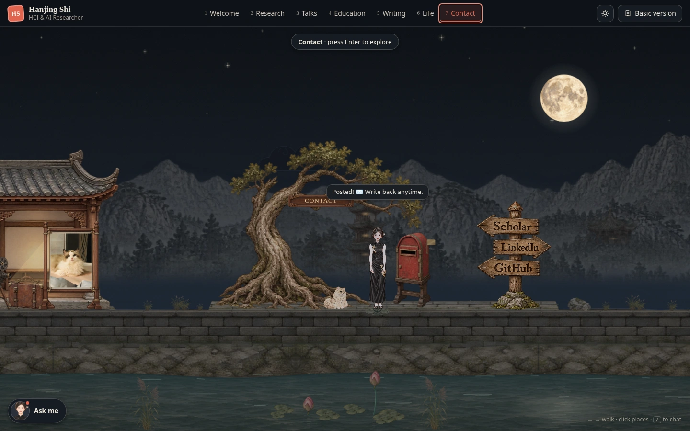